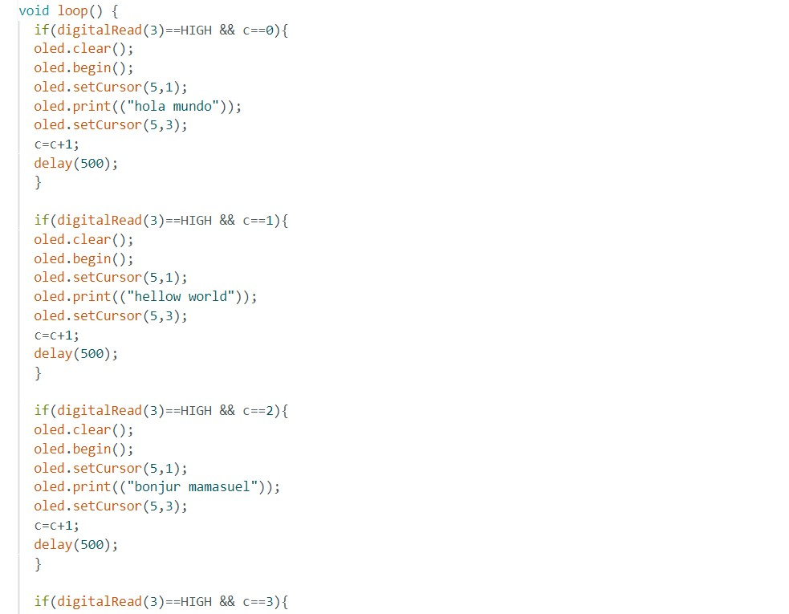

Portafolio de Actividades
Attiny como salida
Departamento de Ciencias e Ingenierías | Universidad Iberoamericana Puebla, México.
OLED l2C
- Resumen -
Una pequeña y magnifica pantalla OLED de 128*64 píxeles, perfecta para mostrar espectaculares gráficos en equipos portátiles.
- Introducción -
Las pantallas OLED (diodo orgánico de emisión de luz) representan una innovadora y fascinante tecnología en el mundo de las pantallas electrónicas. A diferencia de las tecnologías convencionales, como las LCD (pantallas de cristal líquido), las pantallas OLED ofrecen numerosas ventajas en términos de calidad visual, tamaño, flexibilidad y eficiencia energética. Este informe explora los aspectos fundamentales de las pantallas OLED y analiza cómo esta tecnología está impactando diversas aplicaciones prácticas. Al igual que el resto de tipos de pantallas, las OLED necesitan un controlador específico que convierta los datos recibidos en las señales electrónicas para controlar la pantalla.
- Materiales -
Los materiales que se utilizaron en esta práctico son:
∙ Arduino Uno
∙ Jumpers
∙ Protoboard
∙ Leds
∙ Attinys
∙ Pantalla OLED L2C
∙ Push buttons
∙ Resistencias de 220 ohms
- Desarrollo -
Código 
- Resultados -
Las pantallas OLED tienen la ventaja de tener un consumo muy bajo, en torno a 20mA, dado que solo se enciende el pixel necesario y no requieren de backlight. Esto es especialmente interesante en aplicaciones que funcionan con baterías.
- Conclusiones -
Las pantallas OLED han emergido como una tecnología visual versátil y poderosa que redefine la experiencia de visualización en una variedad de aplicaciones. Su capacidad para ofrecer colores vibrantes, contrastes nítidos y flexibilidad de diseño ha generado un impacto significativo en la industria de la electrónica y la informática.
- Referencias -
Tinkercad | From mind to design in minutes: Curso de Arduino Básico, (Clases) Rafael P., Universidad Iberoamericana Puebla, 2023.